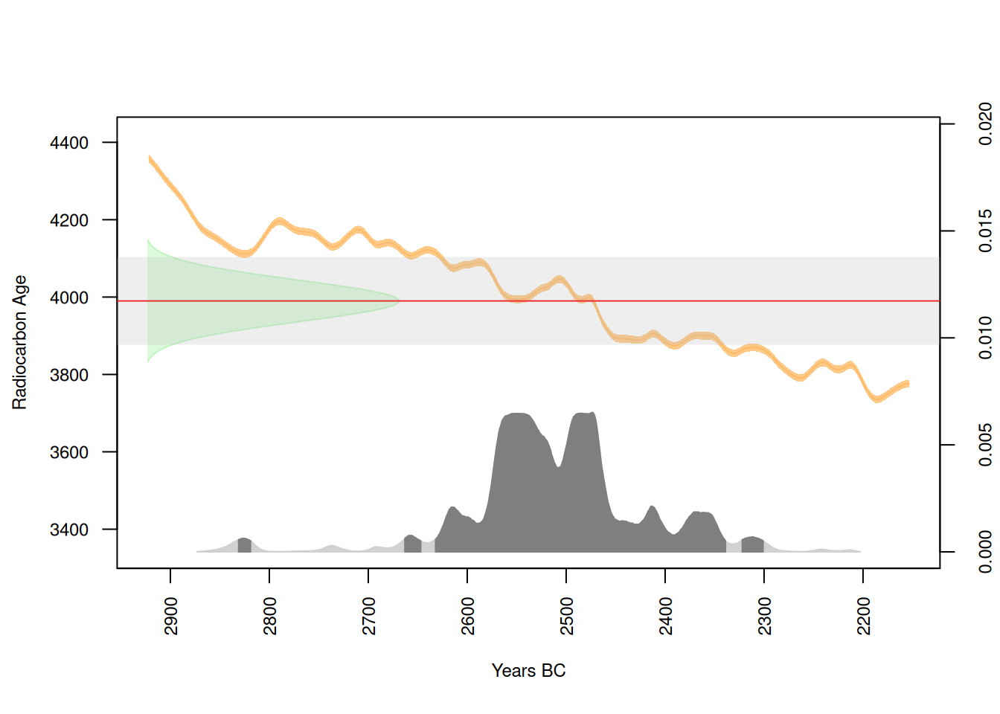
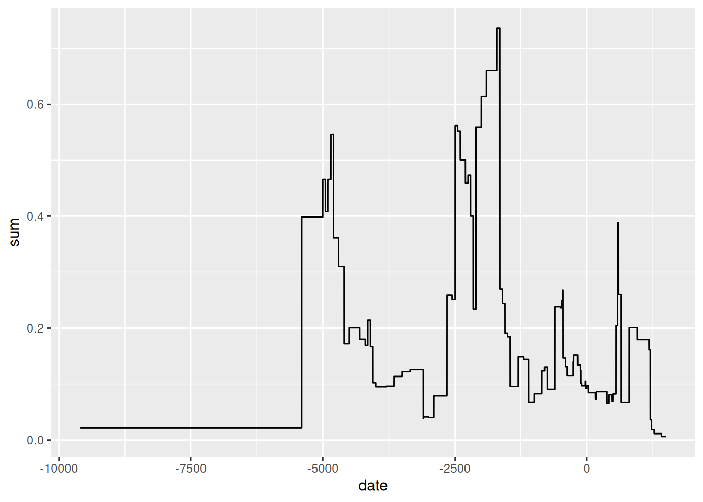

ID_Date Lab_code Laboratory Age14C SD14C Date_type Delta_13C
1 CzArch_1 Poz-41673 Poz 3345 30 conv. 14C BP
2 CzArch_5 A-215 A 3040 45 conv. 14C BP
3 CzArch_6 Bln-102 Bln 6285 100 conv. 14C BP
4 CzArch_7 Bln-102a Bln 6405 100 conv. 14C BP
5 CzArch_11 Bln-1165 Bln 4670 80 conv. 14C BP
6 CzArch_12 Bln-1166 Bln 4670 80 conv. 14C BP
7 CzArch_13 Bln-1167 Bln 2525 80 conv. 14C BP
8 CzArch_14 Bln-1167-A Bln 2440 80 conv. 14C BP
9 CzArch_15 Bln-118 Bln 665 100 conv. 14C BP
10 CzArch_16 Bln-1244 Bln 4955 80 conv. 14C BP
11 CzArch_17 Bln-1396 Bln 4770 60 conv. 14C BP
12 CzArch_18 Bln-1396-A Bln 4775 60 conv. 14C BP Considering time
Goals
- methods of temporal analysis
- calibration of radiocarbon data
- working with temporal uncertainties - introduction to the aoristic method
- R
- joining 2 tables
- creating a new variable based on condition in different variable
- some tips and tricks for your ggplot
Radiocarbon dating
Evocation
- What’s the difference between absolute dating and relative dating?
- How the archaeologists estimated absolute dates before invention of the radiocarbon dating?
- Can you tell other methods of absolute dating?
How RC dating works
A very simple introduction
- It is based on measurement of proportion of radioactive 14C in organic material.
- Plants are absorbing 14C from atmosphere which then continues to animals and humans through food chain.
- After the dead of the organism the 14C starts to decay, and by measuring proportion of the 14C still in the body and comparing it with the amount of 14C in atmosphere, we can measure time when the organism died.
- Since the amount of the 14C in atmosphere varies during time, we need to calibrate the results with so called “calibration curve”.
- Keep in mind that we are not dating a date of creation of the archaeological context, but date of the death of the organism, be it human individual, grain, or a tree.
For more information, see:
- Bayliss, A, and Marshall, P, 2022 Radiocarbon Dating and Chronological Modelling: Guidelines and Best Practice
- Renfrew, C., & Bahn, P.G. 1998. Archaeology: theories, methods and practice
Today’s dataset
LASOLES
Let’s try to calibrate some radiocarbon data!
We will do so with the same data as last time, from the LASOLES radiocarbon database of the Czech Republic.
Quick calibration
- We will use a real radiocarbon date sampled from a Final Eneolihic – Early Bronze Age site Pavlov u Dolních Věstonic, “Horní pole”.
- We will use package
rcarbonand calibration curve IntCal20
Details
- uncalibrated date: 3990
- standart deviation: 54
Additional information
- laboratory code: Erl-4719
- typochronological datation: Bell Beaker Culture
- archaeological context: grave
- sample: human bone
Quick calibration
DateID MedianBP OneSigma_BP_1 OneSigma_BP_2 OneSigma_BP_3 TwoSigma_BP_1
1 1 4464 4565 to 4562 4528 to 4406 4364 to 4360 4783 to 4768
TwoSigma_BP_2 TwoSigma_BP_3 TwoSigma_BP_4
1 4614 to 4596 4583 to 4288 4272 to 4250Median of the calibrated date is 4464 BP
Quick plot
Improving your plot

- argument
HPDhiglights confidence of the posterior density, by default set to 95% (2 standard deviations)
Why I can’t get single BCE number?
Plotting multiple samples
- let’s create a subset with samples from our site, dated to the Final Eneolithic and Early Bronze Age and having no dating errors
- copy and paste this code from our web:
DateID MedianBP OneSigma_BP_1 OneSigma_BP_2 OneSigma_BP_3 OneSigma_BP_4
1 Erl-4709 4240 4383 to 4374 4352 to 4329 4297 to 4150 NA to NA
2 Erl-4710 4267 4398 to 4372 4353 to 4328 4299 to 4225 4204 to 4155
3 Erl-4714 4107 4228 to 4202 4156 to 4067 4046 to 3987 NA to NA
4 Erl-4715 4125 4232 to 4199 4183 to 4167 4159 to 4080 4037 to 3994
OneSigma_BP_5 TwoSigma_BP_1 TwoSigma_BP_2 TwoSigma_BP_3 TwoSigma_BP_4
1 NA to NA 4411 to 4141 4130 to 4091 NA to NA NA to NA
2 NA to NA 4412 to 4148 4116 to 4098 NA to NA NA to NA
3 NA to NA 4343 to 4338 4292 to 3960 3950 to 3924 NA to NA
4 NA to NA 4349 to 4332 4295 to 3970 3944 to 3930 NA to NAMultiplot

Radiocarbon dates as proxies for human demography
- in recent years, radiocarbon data are being widely used for determining relative demography
- different methods, e.g. summed probability distribution (SPD) or kernel density estimation (KDE)
SPD, From Kolář, J., Macek, M., Tkáč, P., Novák, D., & Abraham, V. 2022. Long-term demographic trends and spatio-temporal distribution of past human activity in Central Europe: Comparison of archaeological and palaeoecological proxies. Quaternary Science Reviews 297: p.107834
RC Dates as proxies for demography
SPD - model, From Kolář, J., Macek, M., Tkáč, P., Novák, D., & Abraham, V. 2022. Long-term demographic trends and spatio-temporal distribution of past human activity in Central Europe: Comparison of archaeological and palaeoecological proxies. Quaternary Science Reviews 297: p.107834.
Where to find more info
This article provides step-by-step instruction for plenty other analyses, e.g. SPD
Other packages for radiocarbon data
Exercise
- Clean your workspace, create a new script in your project folder, load the database LASOLES.
- Create a new dataframe with data from burial site Vedrovice - Široká u lesa, dated to Linear Pottery Culture.
- Calibrate all the data and create a multiplot.
Hints: ne.lin, filter(), multiplot()
Working with temporal uncertainties
Problem
- Imagine you are trying to model intensity of human occupation in longer time period by quantifing archaeological contexts but you are struggling with the problem how to compare contexts with various accuracy of their dating.
- E.g. some contexts are dated vaguely to “neolithic period” because the only artefact found there was a culturaly insignificant polished axe. And on the contrary, other contexts are dated to shorter periods such as “Stroked Pottery Culture period” (vypíchaná ker.) thanks to finds of recognizable ornamented pottery.

Aoristic method
will help us with overcoming difficulties with temporal uncertainties
see Crema, E.R. 2012 for more details
what we need:
- for every archaeological context we need a typo-chronological datation and start date and end date of each of these datations, such as in example below:
context_number context_dating_AMCR date_start date_end
1 pit1 ne.lin -5400 -4801
2 pit2 neolit -5400 -4301
3 pit3 ne.lin -5300 -4801
4 grave1 ne.lin -5300 -4801Joining two tables together
- for the sake of the simplicity and for these educational purposes, we will work with LASOLES database as if it does not consists of radiocarbon samples but of contexts of these samples dated typo-chronologicaly to various periods
- but since LASOLES does not have variables with information about start and end date, we will need to get those information from another datase - datation_mor.csv
kultura date_start date_end
1 mezoli -9600 -5401
2 ne.lin -5400 -4801
3 ne-en -5400 -2001
4 neolit -5400 -4301- now we need to add variables date_start and date_end to dataframe df_lasoles. We will do so by joining the two tables through variables “kultura” and “Contex_dating_AMCR” by command
right_join
- see documentation for different types of joins
Saving your new dataframe
You can save your new dataframe now so you don’t need to join the tables again next time:
Calculation of the aoristic sum
Package - aoristAAR
Calculation:
Plot
Quick plot:
Improving your plot
- command
geom_vlineadds vertical line on coordinates defined by you - in this case, we mark -5400 BCE

But why stop here?
- lets mark the periods in your plot and divide the x-axis by 1000 years!
periods <- c(-9600, -5400, -4300, -2200, -800, -480, -30, 581)
marks <- seq(-10000, 1500, by = 1000)
ggplot()+
geom_vline(xintercept = periods, color = "red", linetype = 2)+
geom_line(data = aori, aes(x=date, y=sum))+
scale_x_continuous(breaks = marks)+
labs(x="BCE/AD", y="aoristic sum")+
theme_light()
- notice that when we’ve changed the order of the lines so the later overlaps the earlier
- for the sake of simplicity, we will ignore the year “0” which should not exist
Grouping areals into broader categories
What if we want to observe differences in aoristic sum for different site category? For example settlements versus burial sites?
- first, we can check how many different site categories are being used
[1] "hillfort" "settlement"
[3] "unpublished" "large circular enclosure"
[5] "burial ground" "settlement-exp"
[7] "cave or abri" "extraction site"
[9] "ritual site" "enclosure"
[11] "tumuli" "hoard other"
[13] "secondary find" "hoard of bronze artefacts"
[15] "single find" "military camp"
[17] "hoard of ceramic vessels" NA There are too many areals for any usefull visualisation, so we need to group them to broader categories. For example burial grounds and tumuli will be in one category only.
- first step is creating vectors of site categories:
l_settlements <- c("settlement", "hillfort", "settlement-exp", "military camp", "large circular enclosure", "enclosure")
l_burials <- c("burial ground", "tumuli")
l_hoards <- c("hoard of a bronze artefacts", "hoard other", "hoard of ceramic vessels")
l_other <- c("single find", "cave or abri", "secondary find", "extraction site", "unpublished","ritual_site" )- then with the help of
mutatewill create a new variable “new_category”
Aoristic for different categories
Now we can create aoristic sum for each new site category. Let’s try it for settlements and burials:
Easy subseting
- you can create similar subsets without creating a new variable:
l_enclosures <- c("large circular enclosure", "enclosure")
df_enclosures <- df_lasoles %>%
filter(Site_category_ENG %in% l_enclosures)
aori_encl <- aorist(df_enclosures, from = "date_start", to = "date_end", method = "period_correction", stepwidth = 1)
ggplot()+
geom_line(data = aori_encl, aes(x=date, y=sum))
Exercise
- clean your workspace, create new script, load either the new lasoles table (with end and start dates) or the old one, but then join it with datation table
- create a dataframe of fortificated areas, consisting of hillforts, elevated settlements (settlement-exp) and military camps
- calculate an aoristic sum for these fortificated areas and show it in ggplot
- add marks to your ggplot visualizing the start and the end of the Iron age period (-800 and -21 BCE)
- create a map of those fortified areas in the Czech republic (you will need to create a
sffile and load “republika” fromRCzechia) - create the same map, but only in Olomoucký kraj